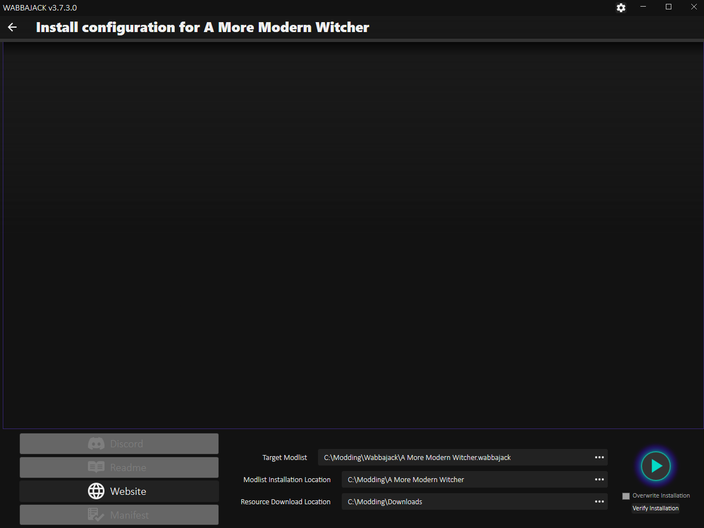
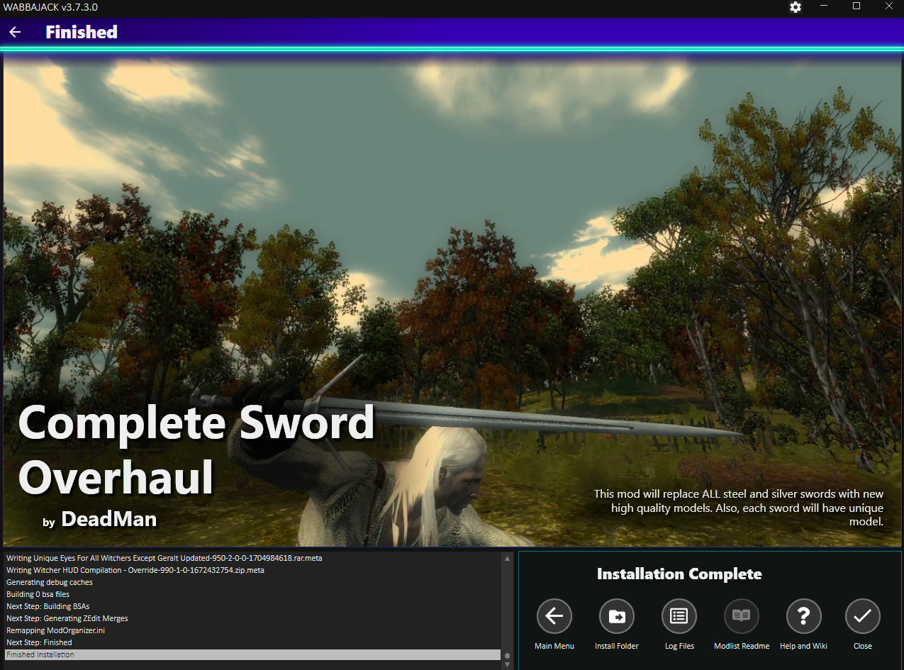
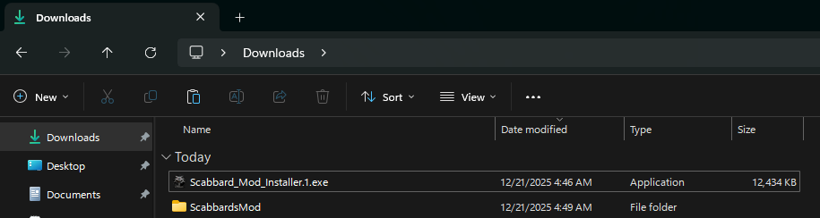
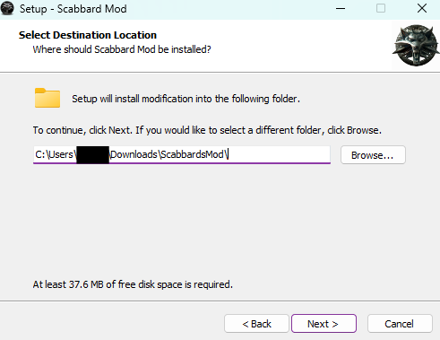
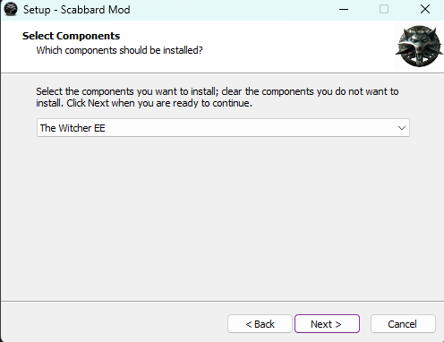
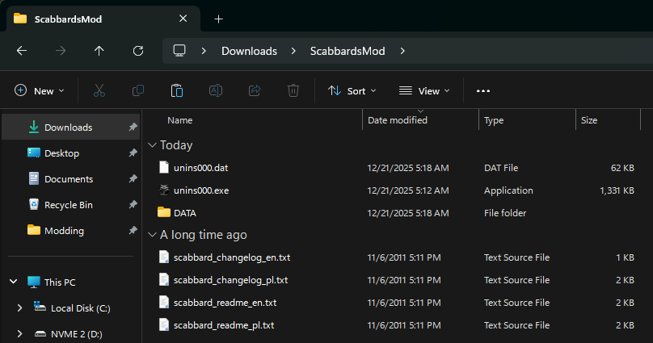
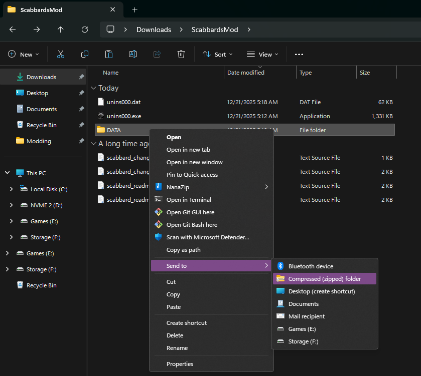
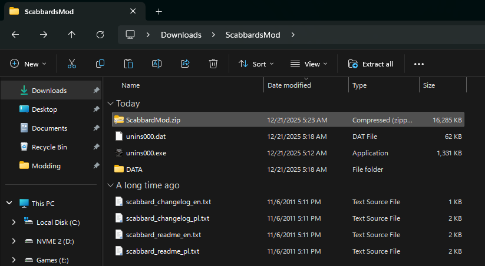

WabbaJack
Wabbajack is an automated installer for the mods and Mod Organizer 2. This install allows for minimal user
intervention. This will install and setup Mod Organizer 2 as well as install the majority of mods, getting you
90% of the way there.
Prerequisites
While not all of these are necessarily required, I highly recommend that you install Visual C++ Runtime
Libraries and update your graphics drivers, especially if you haven't in a while or haven't ever.
A Nexus Mods account is a hard requirement.
A Good Archiving Tool
This is a tool for extracting and manipulating .zip, .rar, .7z and other compressed files.
-
I recommend
NanaZip
for Windows 11 users.
-
I recommend
7-Zip
for
Windows 10
users.
This is a compilation of old and new C++ runtime libraries. Installing these libraries fixes some issues
with running the game on modern systems. A lot of older games need these as well, so it doesn't hurt to
have them installed.
- Download the file from Techpowerup.
- Extract the archive using your archiving tool of choice.
- Open the folder.
- Right click install_all.bat and run as administrator.
- Work your way through each install prompt until finished.
Graphics Drivers
Ensure that your graphics drivers are up to date.
-
Nvidia Graphics Drivers can be downloaded through the
NVIDIA App.
-
AMD Graphics Drivers can be downloaded through
AMD Adrenalin.
-
Intel Arc Graphics Drivers can be downloaded through
Intel Arc.
This is a hard requirement for installing mods from Nexus. If you do not already have a
nexus mods account, you will need one. You can create an account
here.
Wabbajack
Explain Wabbajack in more detail.
Wabbajack Installation
-
Download the Latest
Wabbajack
-
Download my
Wabbajack file
by clicking "A.More.Modern.Witcher.wabbajack"
-
Create a new folder anywhere outside of any default Windows folders, and the game folder itself. I
recommend making a Modding folder in your root directory and a Wabbajack folder inside of it.
"C:\Modding\Wabbajack"
- Place the downloaded "Wabbajack.exe" and "A.More.Modern.Witcher.wabbajack" in this folder
- Run "Wabbajack.exe"
- Select Install From Disk
-
Where it says "Target Modlist", click the three dots, then locate and select
"A.More.Modern.Witcher.wabbajack" inside our "Modding\Wabbajack" folder
- Create a new folder inside "Modding", call it "A More Modern Witcher"
"C:\Modding\A More Modern Witcher"
- Where it says "Modlist Installation Location", click the three dots and select the folder:
"C:\Modding\A More Modern Witcher"
- Create a new folder inside "Modding" called "Downloads"
"C:\Modding\Downloads"
- Where it says "Resource Download Location", click the three dots, and select the folder:
"C:\Modding\Downloads"
-
Wabbajack should look similar to this:

- Begin the installation by clicking the green arrow.
- Accept the Nexus Mods API request
- If you are not a Premium user you will need to manually click download for each mod.
-
Once complete, the installation will show a green Installation Complete screen, you are safe to close
Wabbajack.

-
If you see a red Installation Failed screen, try logging in through Wabbajack's settings, then reinstall
the list to the same folder.
Running The Game
This mod guide uses the MO2 mod manager to streamline the installation process for installing mods and to make
your life easier for launching the game and disabling anything you don't want.
Additional Mods - Manual Installation
There are some mods I couldn't include in the WabbaJack installation due to them being hosted on Moddb, so to
get the full experience you'll have to install these manually yourself. Fortunately I've left a guide here to
do so.
Scabbard Mod
This mod adds scabbards to Geralts swords on his back. It's a little bit buggy but overall adds a lot. This
mod is hosted on ModDB and is packaged in a non-conventional way. As such, I've provided more detailed
installation instructions here.
- Click the big red "Download Now" button.
-
This mod is packaged in an exe file, so we need to handle it differently than we would with a typical
loose file mod.
-
Create a file called "ScabbardsMod" somewhere easy to find, like downloads.

-
Execute the file, when it asks for your witcher game location point it to the
folder you just made instead.

-
Select "The Witcher EE" when it presents you with a dropdown.

-
Finish the install and you should be presented with this in your scabbards mod folder.

-
Right click Data, Select send to and then "Compressed (zipped) folder".

-
Name it "ScabbardMod".

- Install "ScabbardMod.zip" into MO2.
-
Right click DATA and select "set as <data> directory", you should be given the following:
- Click OK.
-
Once the mod is installed, it needs to be moved above the "Complete Sword Overhaul - Scabbards Patch". So
that the patch applies.